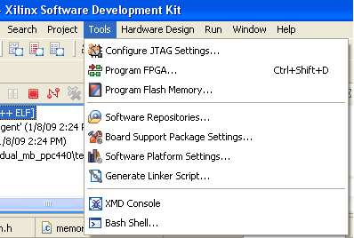

The Tools menu contains the following items:
| Name | Function | Keyboard Shortcut |
|---|---|---|
| Configure JTAG Settings | Specify the JTAG cable to use for communication and JTAG Device Chain configuration of the target board. | None |
| Program FPGA | Program the FPGA connected to the JTAG cable interface. | Ctrl+Shift+D |
| Program Flash Memory | Program a flash memory on the target board. The programming is done via the JTAG cable interface. | None |
| Software Repositories | Add, change, or remove software repositories. | None |
| Board Support Package Settings | Customize the Board Support Package. | None |
| Software Platform Settings | Customize the libraries and drivers for the Software Platform. | None |
| Generate Linker Script | Configure and generate the linker script. | None |
| XMD Console | Open the XMD Console. | None |
| Bash Shell | Launch the Command shell. | None |
Copyright © 1995-2009 Xilinx, Inc. All rights reserved.